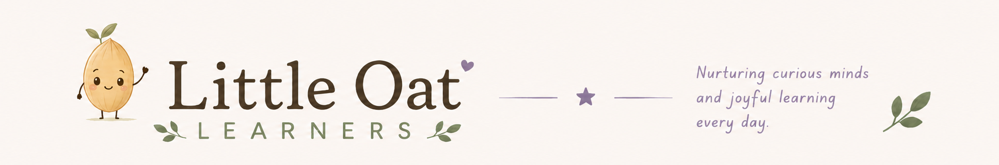

The curriculum isn't complete, and it isn't available to download just yet. It's something I built for my own children over years of homeschooling — and maybe, one day, I'll shape it into something I can share with other families too.
Over the years, this homegrown curriculum is how I taught my own kids to read, to write, to solve math, and to speak two languages. Watching it actually work — seeing a child sound out their first sentence, or switch effortlessly between languages at the dinner table — is what makes me think it might help other families someday too.
For now it lives in binders, notebooks, and a lot of hard-won experience rather than a tidy digital format. Converting it into something polished and shareable is a big undertaking, so I'm taking my time. If and when it's ready, you'll find it here — organized by subject, just like the tools in the rest of the library.
The gentle, step-by-step path I used to take my own kids from first sounds to confident reading.
From forming letters to finding a voice — building writers one small, joyful step at a time.
A hands-on approach that makes numbers make sense, without tears or twenty worksheets a day.
How we wove a second language into everyday life so it grew alongside their first.
Not theory — every piece was tested at our own kitchen table, on real school days with real kids.
There's no promised date — just an open door. If it becomes something I can share, this is where it'll be.
It isn't ready yet, but I'd love to hear if you'd want it. Send me a note about what your family is learning and I'll keep you posted if it ever becomes available.
✉ Tell me you're interested